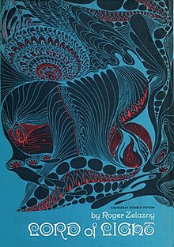
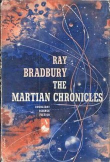

Course: Science Fiction & Religion
Lecture #6: Theology on Other Worlds I
Lord of Light by Roger Zelazny, 1968
This story takes place long after the death of Earth, on a planet settled by human colonists. There, the original settlers have recreated the Hindu pantheon, bestowing on themselves--by means of mutation and the technology they deny all others on the planet--godlike powers and immortality. They rule with caprice and arrogance.

Each "god" has his or her own aspect and attributes: Brahma, the creator; Shiva, Lord of Chaos, Kali goddess of destruction; Yama, lord of death; Krishna, Lord of lust, and all others constructed from memories of ancient Earth.
Only Sam, who it seems is Siddhartha the Buddha as well as Kalkin, an avatar or incarnation of Krishna at the end of time, opposes these gods. He is brought back from "nirvana" where he has been in the magnetic belt around the planet for some 50 years to lead a revolution against the gods.
Sam is told that about 12 years before he was called back, the gods began using psych probes to determine who would get a new body so anyone who opposes them will not receive a new one. This is to insure the caste system and deicratic control.
The gods are not allowing the common people to invent anything (printing press, the bicycle, etc,) because they don't want to upset the only stable government the planet has had.
III. Sam begins teaching the eightfold path of the Buddha but an assassin is sent after him. The assassin, Rild, is converted to the Buddha's way so the gods themselves go after Sam. They don't want his religion to grow. It is a fight between Hinduism and Buddhism.
The gods try to convince Sam to become a god, he refuses, and leaves to continue his fight.
IV. It was Sam, 50 years before, who was able to bind the native sentient species of the planet, the RAKASA, who are beings of energy rather than matter. Sam goes to enlist their help with the promise of freedom if they will help.
Sam frees 65 Rakasa but the leader, Taraka, takes over his body so he can experience pleasure first. So do the rest of the rakasa until they are weary of the life of lust and Sam tells him that is the human condition, guilt. This is the curse of the Buddha.
Taraka/Sam begin working together but Sam is captured so Taraka leaves his body. Sam expects to be killed but is not. Yama, the god of death, says to Sam: "Being a god is the quality. of being able to be yourself to such an extent that your passions correspond with the forces of the universe. Being a god is being able to recognize within one’s self these things that are important and then to strike the single note that brings them into alignment with everything else that exists."
V. The gods discuss what to do with Sam: Kill him or try to alter his mind so he will accept the gods. Meanwhile, his religion is spreading among the people showing that the gods are weaker than they were.
They leave Sam alone, so he goes and get the goddess of thieves to steal a belt for him that will give him power to fight the gods. It can unbind locks, warm him against the cold and transport him anywhere in the world.
There is a purge of the celestial city and many gods are exiled into the world. Varana; the Just, leaves on his own because of the debauchery. Sam is killed by Kali but he has learned from Taraka how to leave his body and he finds another one.
VI. The gods begin being killed and there are 37 suspects, but the psych probe shows more are guilty. However, Kali must become male to take the place of Brahma, who was murdered, since the pantheon cannot be without the creator.
Meanwhile the flush toilet and printing press are re-discovered in one village. Thus Brahma/Kali feel it’s time to move against the accelerationists, ie, those who want to advance into the industrial age.
One of the gods finally figures out that Sam is the one killing the gods so the people can start living with technology again. He had been probed but had learned how to beat it so he wasn't recognized.
Sam and Brahma begin gathering their troops for the fight. The Rakasa join Sam, keeping their promise to help. Sam has recruited NIRRITI, the black one who controls the soulless ones, or zombies, to help.
The battle is joined, and Sam wears his special belt so Mara, Lord of Darkness, recognizes the belt and realizes Sam is also Kalkin, the god who would come at the end of time (the yuga). to make things right and bring justice.
After the battle most the gods are dead and Sam is sent, via a radio tower, up into the magnetic cloud again. But the Rakasa are now free and Nirriti, God of the undead is also.
VII. Much scientific progress is made after the battle, so Sam is winning after all. Nirriti wants to make the city of the gods fall. Jan, one of the first, agrees and says he is a Christian and that he will help as the true faith must come again soon.
Fifty years have passed and Sam's power is returning. Some of the gods are leaking scientific knowledge into the world. None want to owe Nirriti anything. Nirriti attacks city after city and is considered a madman for he cares only for the souls in the cities, not the bodies. He wants to destroy every symbol of the gods.
Sam is called back and he sends a message to Nirriti that they will battle with him against the gods if Nirriti will agree not to war against the followers of either Buddhism or Hinduism as they exist in the world for purposes of converting them to his persuasion.
Sam believes Nirriti will agree because he knows that if the gods are no longer present to enforce Hinduism then he would gain converts. He can see this from what Sam managed to do with Buddhism. He feels that his way is the only right way and that it is destined to prevail in the face of competition.
Taraka asks Sam, "Which one IS the right way?" Sam says, huh, how should I know. Taraka says he has looked upon his flame and names him Lord of Light so he should know. Sam says, “I lied, I never believed it myself and still don't. I could have just as easily chosen another way--say Nirriti's religion--only crucifixion hurts. I might have chosen Islam, only I know too well how it mixes with Hinduism. My choice was based upon calculation not inspiration, and I am nothing."
"You are Lord of Light" says Taraka.
Genesha comes to Jan and Nirriti saying the gods are weak but can still do a lot of damage, also that he is a Christian sympathizer. He fills Nirriti in about Brahma's strategy, ie, letting them win several cities but building strength to defeat him at heaven.
Yama, Sam and the others decide they would rather live with heaven and side with Brahma then deal with Nirriti, a Christian, the black one. Sam contacts Brahma from the temple where this all began. Brahma is surprised as he didn't know Sam was back. Sam offers him a bargain. Sam, Yama and the others will fortify the city of Khaipur to beat Nirriti if heaven will sanction accelerationism and religious freedom and end the reign of the Lords of Karma. Brahma agrees.
The Lord of light and Brahma hold the field agains the black one. Jan loses his life as did Genesha. Nirriti has his neck broken by Brahma. Nirriti recognizes Yama as Azreal, the angel of death. Yama strikes him on the face but Nirriti quotes from the Sermon on the Mount. Yama quotes a verse back and then says Nirriti is mad. Yama asks who he is. He then leaves.
Sam comes to Nirriti and gives him water. Nirriti asks Sam who he is and is told "Sam". You, you rose again, Nirriti asks.
"It doesn't count, says Sam, I didn't do it the hard way"
Nirriti's eyes fill with tears. "It means you'll win, though. I can't understand why He permitted it...”
Sam says to him that whatever the source of the Buddhas' message it was pure. That is why it took root and grew.
Nirriti says. "Every good tree brings forth good fruit" It was a will greater than mine that determined I die in the arms of the Buddha, that decided upon this Way for this world... give me your blessing, Gautoma, I die now.
They carry Jan Olvegg into the palace of the masters of Karma, most of whom are dead, to get him a new body quickly. Tak the ape is now a man, not an ape. He and Jan plan to travel the world before it is completely mechanized.
The lords of Karma are replaced by the wardens of transfer. The bicycle is rediscovered. Seven Buddhist shrines are erected. Nirriti's palace is made into an art gallery. Vishnu now rules in heaven and Brahma is no more, as Kali wants to be female again.
Sam is called Maitreya, Lord of Light, but he prefers Sam. He disappears one day while walking along a river. A red bird appears, who is not indiginous to this area. There are four stories about what became of Sam. Some say he took the saffron robe again to find peace from all the noise and fame of his victory. Some say he went beyond the bridge of the gods and will never return but is in true Nirvana. The truth is unknown so take your pick.
SUMMARY OF LORD OF LIGHT:
This book has many levels of meaning. On the surface it is a story of a messiah figure who comes to free the humans from the caprice of the gods. On another level, it is a story which shows the historical tensions between Hindu beliefs and Buddhist philosophy, which rejects the gods as illusion and unnecessary. This is historically true, for in Hindu thought, Vishnu incarnated as the Buddha to lead astray those that were not worthy of the Hindu beliefs. Today, there are very few Buddhists left in India.
On yet another level, this is a story of the conflict with Christianity and the idea that it is better for Hindu and Buddhist to team up against this interloper then to fight each other. Today only about 2% of the Indian population is Christian. About 2% of the Indian population is Jewish. In India, to convert to Christianity means to become a Shudra, an untouchable. Even the Buddhists were not so treated.
Sam represents a savior who tries to bring justice to the poor and oppressed but also religious freedom, whether Buddhist or Hindu. Christianity and Islam are seen as interlopers and foreign.
Questions / Discussion:
What do you think of this story?
It is interesting to have the Buddha also be Kalkin for in Hindu thought the buddha is wrong and evil, while the Kalkin avatar is good. Is this a real contradiction?
Do you think Zelazny was really anti-Christian or is he simply looking at possibilities on another world?
THE MARTIAN CHRONICLES by Ray Bradbury
Probably Bradbury's most famous work, this was made into a mini-series over 20 years ago. It runs 5 hours and thin.
The stories that comprise the chronicles are short stories by Bradbury which were published in magazines over a period of time. He put them together in 1950 as The Martian chronicles.

They document humans first colonization on Mars and what happens to those who were indigenous to Mars.
Apparently the first expedition in 1999 took with them Chicken pox which wiped out most of the humanoid Martians. Later expeditions came and discovered the few left.
Missionaries also came from the Episcopal church and in a short story not originally part of the Martian Chronicles, tells of these two priests and their discovery. This story, included in the film, comes from Bradbury’s book The Illustrated Man and is called "The Fire Balloons".
The film will show the whole story of "The Fire Ballons" with a follow-up of the priest and what happens to the Martians. The total running time is about 40 min.
SHOW: [5-8- Fire Balloons = 30 min]
SHOW: [DVD - side 2 / Scenes 5-11]
THE MAN -- by Ray Bradbury (1948)

An expedition headed by a Capt. Hart lands on a planet near a city. Nobody comes out to meet them and he is mad. Capt. Hart is a driven man, eats and sleeps little and looks older than his years. Very tense. as he says: There has been no rest on Earth since Darwin, so humans are looking for peace and quiet among the stars.
He sends a fellow officer, Martin, into town to find the mayor and get them out to greet them. Martin returns saying they are not interested in coming because something big happened yesterday in their city.
A man had come for whom they had waited a very long time, maybe millennia, so their rocket landing means nothing.
The Capt. thinks it’s another one of his expeditions of three ships, Burton or Ashley, trying to upstage him.
Hart wants to know what’s so great about this man. Martin says he heals the sick, comforts the poor and fights hypocrisy and dirty politics and talks to the people.
Hart still doesn't get it, then it dawns on him, but he says he doesn't believe it. They go into the city, sets up a universal translator and a recorder and talks to the mayor. He wants proof but he never believes what he is told.
Martin, tired of the Capt’s petty tyranny, says he is staying.
The Capt. interviews 3 dozen people and still thinks it is Burton or Ashley at work. However, a gong sounds and Burton and Ashley’s ships are just arriving. They had been in a cosmic storm and most the crews plus the two captains are dead.
This means that the Man was who people said he was and the Capt. heads back to the city. It is implied that the Man has already left and the Capt. demands to know where he has gone.
The mayor says he doesn't know but Hart thinks he is hiding him. He gets so angry he shoots the mayor in the arm. says to him: You've never believed and now that you think you believe, you hurt people because of it.”
Hart gets hysterical, plans to go from planet to planet till he finally catches up with him.
Martin escorts him to the ship but says he is staying there as are 7 of the 10 crew members.
Martin asks what he will ask him if he finds him. Hart answers: "a little peace and quiet" to which Martin reply’s, haven't you ever tried to relax?
After the ship leaves, the Mayor reveals that the Man is, in fact, there in the city and waiting for them.
Why did they keep the Man's presence from Capt. Hart (and the crew) until Hart left? Any other comments?
THE MAN is still one of the best variations on two old Christian themes: The search for the historical Jesus, and the speculation that Christ might repeat his mission to other beings on other planets.
Now to end here is part of a long lyrical "cantata" by Bradbury which explores the eternally repeating Christ called "Christus Apollo"
Science Fiction and religion, Lecture #6 Videos to Discuss:
SHOW: Voyager & Start by 8:10
SHOW: Blink of an eye - season 6, ep 12
ISSUES INVOLVED:
What causes religion in the first place? Can anything that produces awe be the cause? (Japan)
How something natural can be interpreted as supernatural by those who don't know. Could this have happened on Earth in our developing religions? Do more advanced cultures sometimes do this to primitive ones? (ex: the cargo cult of the Philippines)
Cargo cult-New Guinea